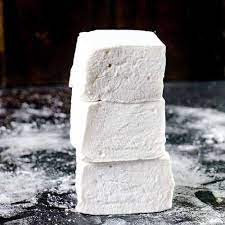

Marshmallows

Description
This recipe will yield: 1 Half-Sheet Pan; 4½ Dozen Squares, approximately 2 in. (5 cm)
Ingredients
- Egg whites (5 whites) 150 g
- Granulated sugar 480 g
- Glucose or corn syrup 120 g
- Water 180 ml
- Sheet gelatin, softened 10 sheets 20 g
- Orange or lemon oil(optional) 10 drops
- 10 drops Powdered sugar as neede
- Cornstarch as needed
Steps
- Line a sheet pan with oiled parchment paper or a silicone baking mat. place the egg whites in the bowl of a mixer fitted with the whip attachment.
- Bring the sugar, glucose syrup and water to a boil in a heavy saucepan over medium-high heat.
once the mixture begins to boil, start to whip the egg whites on low speed.
- While the eggs whip, cook the sugar syrup to 265°f (130°c).
- as soon as the sugar syrup reaches 265°f (130°c), increase the mixer speed to medium-high. pour the syrup over the whipping egg whites, holding the pan close to the inner wall of the bowl to avoid pouring syrup onto the whip.
- as soon as all of the syrup has been added to the whipped egg whites, melt the gelatin and pour it into the whipped egg mixture, avoiding the whip attachment.
- remove the bowl from the mixer. Gently fold in the orange oil, using a whisk or spatula, without deflating the meringue. spread the marshmallow in an even layer onto
the prepared pan.
- Let the marshmallow dry, uncovered, 24 hours at room temperature.
- to portion the marshmallows, sift together equal amounts of powdered sugar and cornstarch.
sprinkle the surface of the marshmallow with half of the mixture. invert the pan of marshmallow onto a clean sheet of parchment paper. cut the marshmallow into 2-inch (5-centimeter) squares.
toss the cut pieces of marshmallow in the remaining sugar mixture.
ps.
Flavored Marshmallows —substitute almond, peppermint or other flavoring oil for the or-ange or lemon oil in step 6. or substitute 15 milliliters coffee extract for the orange or lemon oil. or fold in 120 milliliters intense raspberry or strawberry purée.
Approximate values per 15-g serving: Calories 35, Total fat 0 g, Saturated fat 0 g, Cholesterol 0 mg, Sodium 5 mg, Total carbohydrates 8 g, Protein 1 g, Claims—fat free